Lore
Uncover the Rich Mythology
Uncover the Rich Mythology
and History Behind the Game
The Old World
In the Old World, humans had advanced technology and lived in
cities with towering skyscrapers. But their world was
destroyed by a global catastrophe known as the Faro Plague,
which wiped out all life on Earth, except for a few isolated
tribes.
The Nora Tribe
The Nora Tribe is one of the few remaining tribes in the
world. They live in the sacred land of the All-Mother and
worship her as their creator. Aloy, the protagonist of the
game, was born an outcast of the tribe and must prove herself
to earn their respect.
The Machines
The world is now populated by robotic creatures, known as
Machines. These Machines were created by the Old Ones to serve
humanity, but they turned on their creators during the Faro
Plague. Aloy must hunt and defeat these Machines to survive.
Characters
Learn the Stories and Personalities of the Game's Iconic Characters
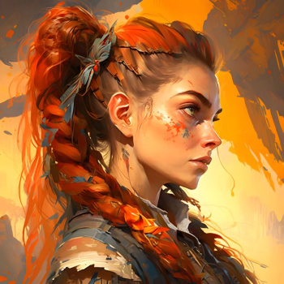
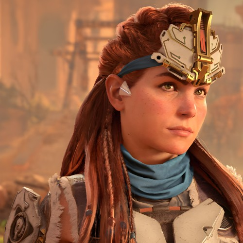
Aloy, The Great Mother
Aloy is the protagonist of the Horizon series, and
the main character in Horizon Zero Dawn and Horizon Forbidden
West. She is a skilled hunter and archer, as well as a talented
engineer and inventor. Aloy is an outcast from her tribe, but
through her bravery and determination, she becomes a hero to all
of humanity. Aloy's journey begins when she discovers a
mysterious device called a Focus, which allows her to see the
world in a different way and uncover hidden secrets. Along the
way, she faces a variety of dangerous enemies, including robotic
creatures known as machines, as well as human foes who seek to
control or destroy the world around them. Despite the challenges
she faces, Aloy remains steadfast in her quest to uncover the
truth about her past and the world she lives in. Her strength,
intelligence, and compassion make her a beloved character among
fans of the Horizon series, and an inspiration to all who seek
to overcome adversity and fight for what is right.
Meet Aloy’s friends
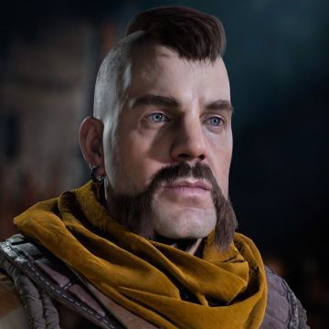
Erend
Erend is a member of the Oseram tribe and a close ally of
Aloy. He is a skilled fighter and strategist, and assists Aloy
on her journey in the Forbidden West.
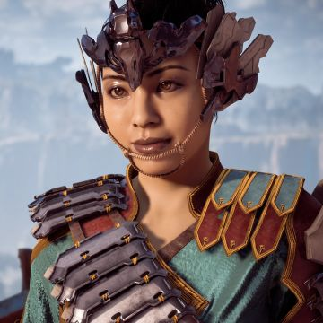
Talanah
Talanah is a skilled hunter and warrior of the Hunter's Lodge,
and a potential ally of Aloy. She is determined to protect the
lands of the Nora and bring justice to those who would harm
them.
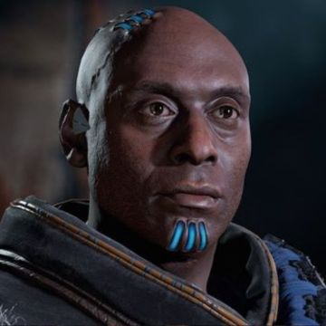
Sylens
Sylens is a mysterious character who aids Aloy in her quest.
He possesses advanced knowledge of the Old Ones and their
technology, and has his own agenda in the Forbidden West.
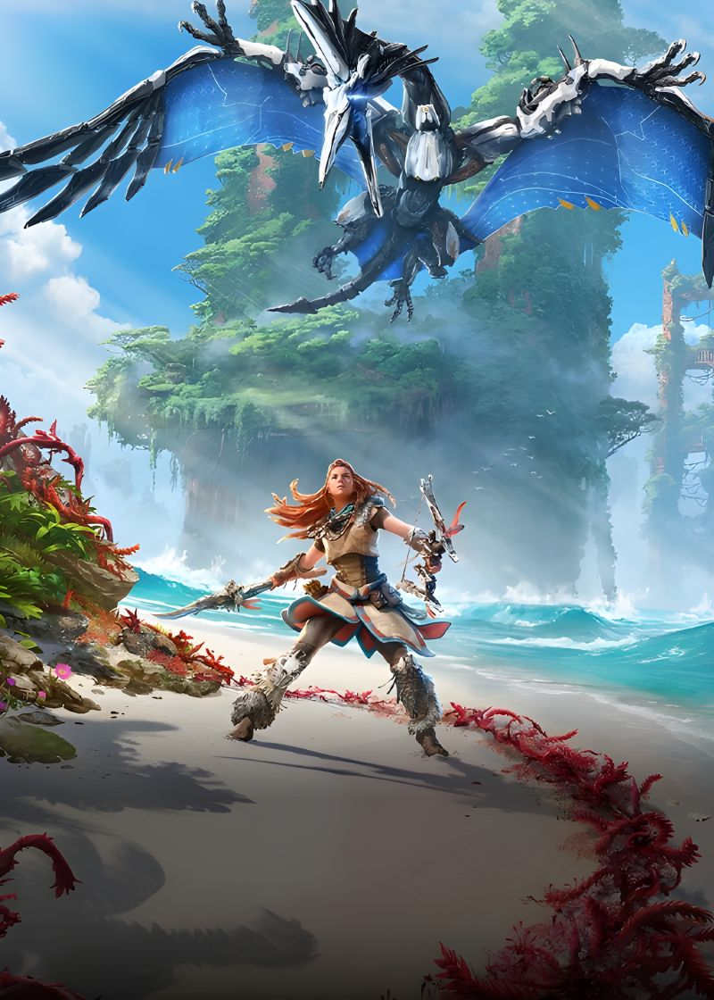
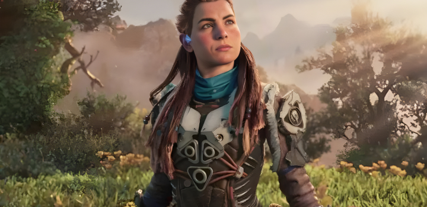
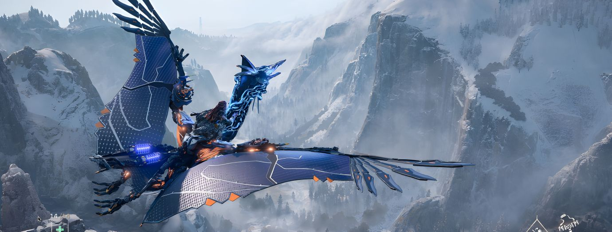
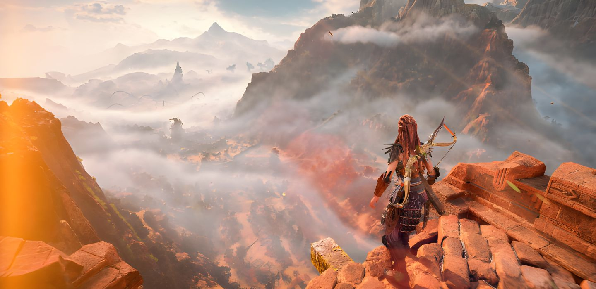
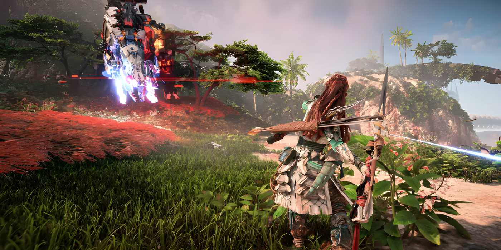
Gameplay
Explore the Thrilling Gameplay
Horizon Forbidden West is an action role-playing
game set in a post-apocalyptic world overrun by robotic
creatures. Players take on the role of Aloy, a young hunter who
must navigate the dangerous landscape and uncover the secrets of
the old world. The game features a wide range of weapons,
skills, and abilities that allow players to take on robotic
enemies in a variety of ways. Aloy can use her trusty bow and
arrow to take out enemies from a distance, or engage in melee
combat using her spear and other weapons. In addition to combat,
Horizon Forbidden West features a variety of other gameplay
mechanics, including crafting, exploration, and puzzle-solving.
Players can gather resources to craft new weapons and items,
climb cliffs and buildings to uncover hidden secrets, and solve
puzzles to unlock new areas and abilities.
Learn more
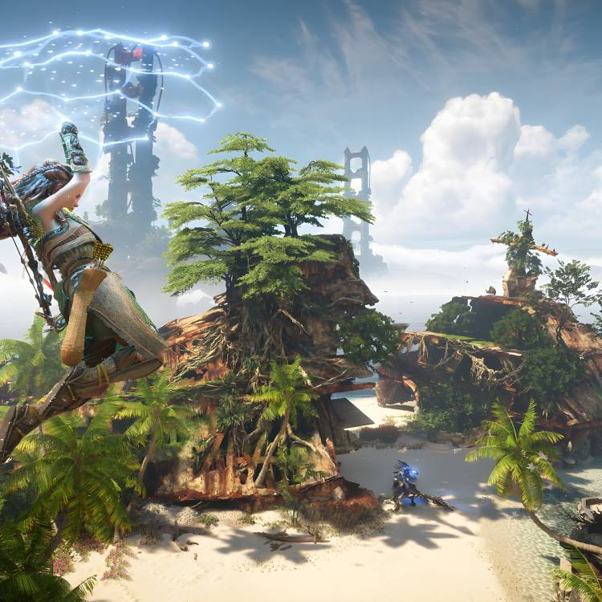
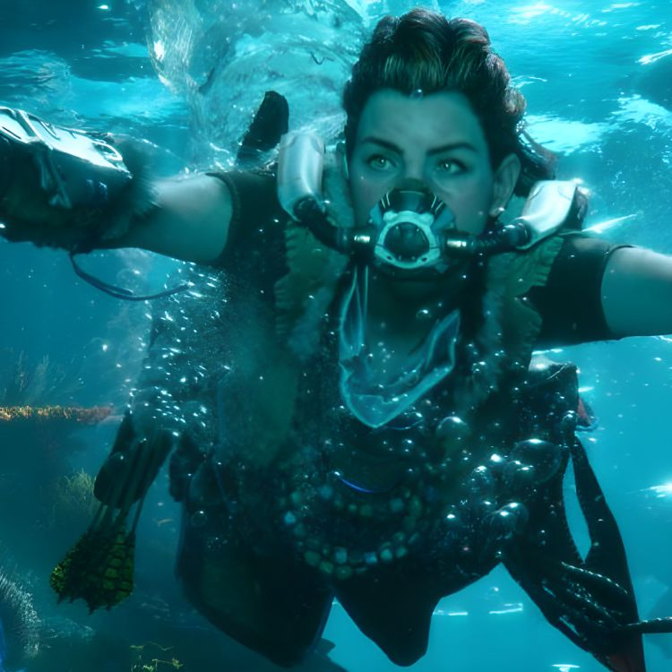
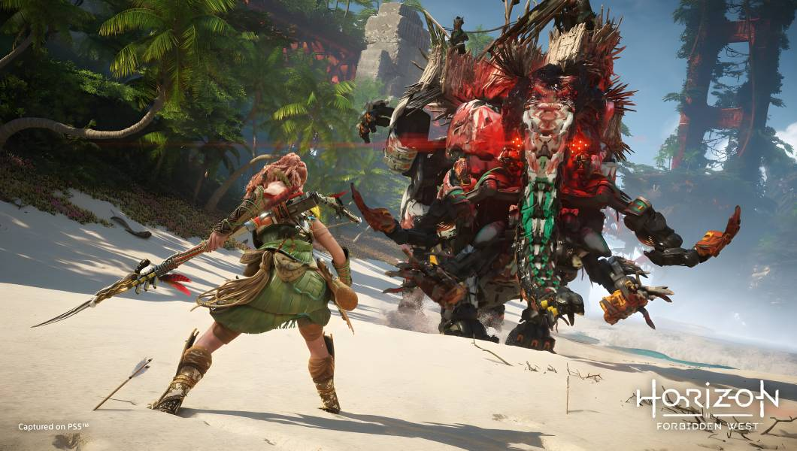
Reviews